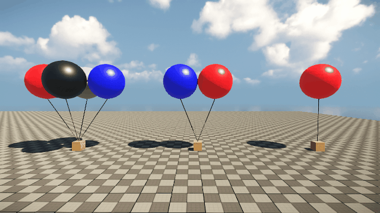
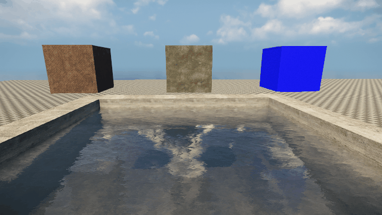
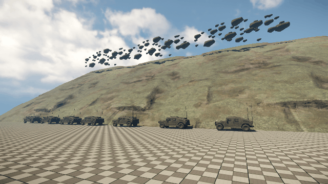
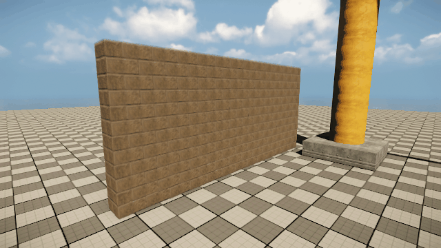

Обзор
В этой статье мы покажем вам некоторые из различных физических настроек, которые вы можете добавить в свой мир, чтобы сделать его более динамичным.
Эта страница зависит от объекта, который доступен только в GameSDK.
Добавление объекта
Если вы еще этого не сделали, начните с создания нового уровня.
В Создание объектов вкладка, перейдите к Унаследованная сущность -> Физика -> RigidBodyEx и перетащите его на свой уровень. По умолчанию это должна быть сфера:
Сущность RigidBodyEx («RigidBody Extended», расширенная версия устаревшей сущности «RigidBody») — лучший выбор при работе с физическими объектами. Он содержит наибольшее количество функций, что делает его наиболее стабильным, надежным и физически реалистичным вариантом. Можно использовать более дешевые физические объекты, такие как BasicEntity или AnimObject, но они поддерживают только базовые функции и не могут управляться столь же точно.
Вы можете изменить визуальное представление сущности RigidBodyEx практически на что угодно. По умолчанию это сфера CGF, и с помощью Модель свойство, вы можете изменить его на что-то другое.
Настройки физики
Теперь, когда у нас есть RigidBodyEx на уровне, если вы уже пробовали его, вы заметите, что по умолчанию он фактически не материализуется.
Первое, что нам нужно сделать, это сообщить движку, сколько весит этот объект. Это делается в Масса параметр, поэтому установите его на 100. Это сообщит двигателю, что он весит 100 кг. Если он весит -1 кг, как это происходит по умолчанию, то движку приказано сделать его неподвижным (если только масса не задана в cgf непосредственно в UDP узла). Запрыгните в игру (CTRL+G) и выстрелите в сферу, и она покатится по земле.
Если вы разместите сферу так, чтобы она парила над землей, вы можете заметить, что она не падает/перемещается сама по себе, когда вы входите в игру (или активируете AI/Физику). По умолчанию объекту приказано «спать», чтобы он не использовал ресурсы физического движка до тех пор, пока это не потребуется. Вы можете указать объекту, что он «бодрствует» по умолчанию, сняв флажок Отдых параметр. Теперь зайдите в игру, и на этот раз она должна упасть.
В качестве альтернативы Mass вы также можете установить Плотность. Плотность в основном используется для объектов, которые должны иметь значение float. Обратите внимание, что слово «альтернативно» здесь важно, поскольку вы не можете использовать одновременно массу и плотность для одного и того же объекта. Физический движок будет отдавать приоритет массе над плотностью в случае, если используются оба. Итак, верните Массу на -1, чтобы отключить ее, а затем установите Плотность на 0,5. Теперь вы должны увидеть сферу float вверху.
Стоит отметить, что Масса и Плотность это просто разные способы задать одно и то же свойство (массу). Если вы укажете только плотность, масса будет рассчитана как плотность, умноженная на объем физического прокси. Соответственно, плотность – это масса/объем. Итак, если у вас есть два объекта RigidBodyEx, один — банка с газировкой, другой — трактор, и оба имеют одинаковые настройки и Массу, равную 1, трактор поднимется в воздух, а банка с газировкой упадет на землю из-за их большой разницы в размере и, следовательно, в плотности.
Два удобных CVar, которые могут дать вам важную информацию о физике: p_draw_helpers=1 чтобы активировать визуализацию физического прокси:
Дополнительно установите p_debug_joints=1 для отображения весовых значений суставов.
Слева: Значение массы установлено на 100, плотность на -1. Правильно: Значение плотности установлено на 100, масса на -1. Плотность 100 для сферы такого размера дает 418 кг.
Пример — воздушные шары
В этом примере у нас есть три набора воздушных шаров, чтобы показать, как можно создавать реалистичные физические симуляции, будь то небольшой гелиевый шар или огромный воздушный шар, на котором может нести игрок.
В основе каждого набора лежит сущность RigidBodyEx, имеющая Масса из 4 кг. Мы используем Веревки со стандартными настройками для физического соединения объектов.
- На правильно у нас есть один объект RigidBodyEx в форме сферы, представляющий наш воздушный шар. У него есть Масса весом 1 кг и диаметром 2 м. Самостоятельно он не может поднять вес в 4 кг.
- В центр у нас точно такая же установка, за исключением того, что на этот раз у нас два воздушных шара. Эта установка способна поднять вес. Используя Сущность:Скорость Узел Flow Graph, который мы можем измерить, способен поднимать объект со скоростью около 4 м/с.
- На ушел у нас снова та же установка, но с использованием четырех воздушных шаров. Конечно, он может поднять вес и имеет скорость подъема около 8 м/с.

И не забудьте упомянутый ранее воздушный шар!
Этим можно даже управлять с помощью простой настройки Flow Graph, чтобы увеличить значение скорости для связанного объекта WindArea. Эту сущность WindArea можно найти в Унаследованная сущность -> Физика -> WindArea.
Пример — плавающие объекты
Плавание в воде определяется отношением плотности объекта к плотности воды, которое равно 1000 (то же самое верно и для плавания в воздухе, за исключением того, что его плотность равна 1). Если плотность объекта выше 1000, он утонет, а если ниже, то float. Если вы не хотите изменять плотность объекта (а значит, и его массу), вы можете самостоятельно настроить параметры воды в разделе «Плавучесть» свойств RigidBodyEx. Хотите ли вы, чтобы объект упал в воду, float слегка упал на поверхность или медленно опустился на пол, всего этого можно добиться с помощью всего лишь пары параметров.
Каждый из показанных объектов представляет собой объект RigidBodyEx, для каждого из которого задано всего три параметра.
- Справа у нас есть «плавающий» куб. У него есть Масса из 1000, water_density из 1000 и water_resistance из 1000.
- В середине «отвесного» куба находится Масса из 1000, water_density из 100 и water_resistance 1000. Плотность 1/10 позволяет ему падать сквозь воду.
- Слева у нас есть наш «тонущий» куб с Масса из 1000, water_density из 130 и water_resistance 1000. Более конкретное значение плотности 130 позволяет ему погружаться глубоко в воду, а затем медленно подниматься обратно на поверхность. В этом случае любое значение меньше 125 приведет к тому, что куб будет продолжать погружаться до тех пор, пока не упадет на пол. Чем ниже значение, тем быстрее он будет погружаться.
Все эти значения, конечно, произвольны, поскольку от размера вашего объекта зависит, насколько он будет плавучим. Например, компенсация массы плотностью также даст немного другие результаты реакции.

Пример — падающие камни
В этом примере мы покажем, как настроить камни, падающие со склона холма. Это очень простая установка, которая демонстрирует одно простое правило: падение тяжелых камней с холма приведет к массовым разрушениям.
Снова используя объекты RigidBodyEx, мы имеем три разных типа: маленький (500 кг), средний (1000 кг) и большой (2000 кг), все из одной и той же геометрии, только с простым масштабированием, примененным к каждому. Это позволяет внести некоторое разнообразие в реакцию камней и придать ей более реалистичное представление.
Фактическая настройка для этого немного отличается в том смысле, что мы оставляем Отдых флаг включен. Это означает, что когда вы запустите игру, камни будут плавать в состоянии покоя:
Однако это оставляет нас перед проблемой: нам нужен способ разбудить камни в их состояние «Пробуждение», когда мы будем готовы к тому, чтобы физическая система взяла верх. Это может быть кат-сцена, взаимодействие игрока или просто какое-то случайное событие в мире. В любом случае, его можно очень легко запустить через Flow Graph:
Используя Итератор: GetEntitiesInBox node мы можем найти все объекты RigidBodyEx в указанной области.
Ставим два Тэги чтобы легко определить минимальные и максимальные границы «коробки». Этот «поле» представляет собой область, в которой узел будет проверять наличие объектов:
Как только мы определим наш блок и идентифицируем все объекты внутри этого блока, мы можем применить простой Физика:ActionImpulse каждой сущности, которая разбудит их и позволит им материализоваться.

Пример — разрушаемая стена
В этом примере мы собираемся создать полностью разрушаемую и физическую кирпичную стену, состоящую из отдельных кирпичей.
Первое, что нам понадобится, это кирпич! Итак, создайте простой объект Box (0,5 x 0,25 x 0,25 м) с помощью инструмента Designer, примените кирпичный материал по вашему выбору, настройте Наложение текстур а затем экспортируйте в CGF. Как только это будет сделано, мы можем добавить еще один объект RigidbodyEx и использовать наш кирпич в качестве модели.
Как только кубик RigidBodyEx появится в мире, начните копировать его, чтобы построить стену приличного размера. Вы также можете сделать установку из кирпичей double (толщина 2x), а затем повернуть конечные кирпичи на 90 градусов, чтобы красиво закрыть их.
Стоит отметить, что это, конечно, не самый оптимальный способ добавления физического разрушения в ваш мир (например, с помощью GeomCache или разрушаемого объекта с суставами вы можете сделать несколько огромных наборов с минимальным снижением производительности), однако это, вероятно, один из самых простых и гибких методов для начала.
Установите Масса до 50, снимите галочку Отдых и прокрутите вниз до раздела «Моделирование» в свойствах. Здесь у нас есть некоторые расширенные настройки физики, и поскольку кирпич — относительно небольшой объект, установите max_time_step до 0,01, это улучшит устойчивость небольших объектов (иначе стена может рухнуть сама по себе). Если этого все еще недостаточно, вы также можете уменьшить мировую гравитацию с помощью p_gravity_z=-9,81 (вместо значения по умолчанию -13). Наконец, вы также можете увеличить p_max_MC_iters с 6000 до 12000, но к этому моменту оно уже должно быть достаточно стабильным.
Зайдите в игру и начните разбивать кирпичи оружием, чтобы проверить, выглядит ли он достаточно устойчивым.
Имея дело с идеально квадратными конструкциями, такими как эти кирпичи, могут быть случаи, когда уменьшение p_max_contact_gap CVar от 0,01 (по умолчанию) до примерно 0,002–0,005. Если вы увеличите его до слишком высокого значения, например «1» (проникновение 1 м), кирпичи провиснут почти до такой степени, что будет казаться, что они плавятся (что в некоторых случаях может быть желаемым эффектом!):
Давайте немного улучшим его и воспользуемся HMMWV, чтобы убрать его:
Использование p_profile=1 мы можем увидеть некоторую статистику производительности физической системы, так как вы можете заметить небольшое дрожание при запуске физического моделирования более 300+ твердых тел за один раз. Увеличивая max_time_step с 0,01 до 0,015 (по умолчанию 0,02), мы по-прежнему имеем устойчивую стену и больше не трясемся, когда она рушится, так что это хороший баланс между производительностью и стабильностью.
И наконец, это было бы неполным без разрушительного шара!
